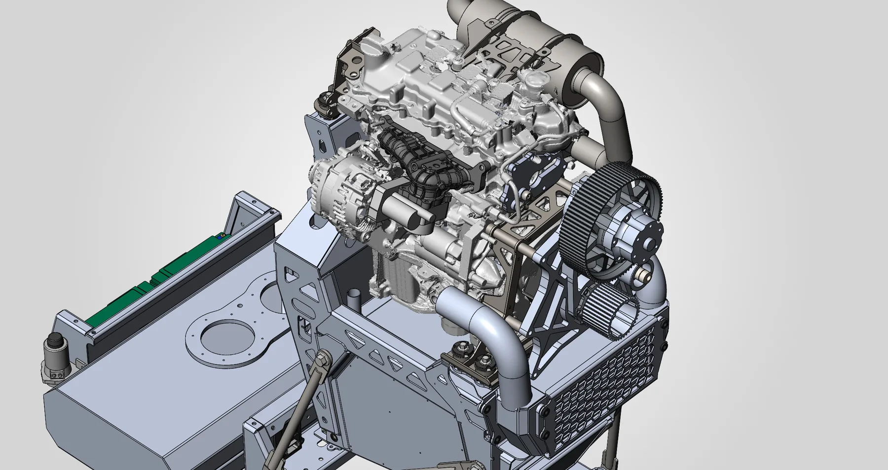

Actuators
Injectors, coils, HP pump, throttle, valves
Ctrl K

Rail pressure
Target from a map, feed-forward from injector demand, P from a rail model and I near the target. Volume per stroke is converted to valve closing time using the cam profile.
Module sections
GDI injectorsTabs: Injector, Curves, Logger, Outputs, Errors & limitsDescribedPFI injectorsTabs: Injector, Curves, Outputs, Errors & limitsDescribedIgnition coilsTabs: Dwell, Current and spark, Outputs, Errors & limitsDescribedHPFPTabs: Valve, Mechanics, Curves, Controller, Pumps, Test, Errors & limitsDescribedElectronic throttleTabs: Throttle body 1, Throttle body 2, Spring 1, Spring 2, Stopped engine, Test 1, Test 2, Errors 1, Errors 2DescribedWastegate pneumaticTabs: Valve A, Valve BDescribedWastegate servoTabs: Servo A, Servo B, Spring A, Spring B, Stopped engine, Test A, Test B, Errors A, Errors BDescribedCam phasersTabs: Intake A, Intake B, Exhaust A, Exhaust B, Intake regulator, Exhaust regulator, Holding (intake), Holding (exhaust), PID (intake), PID (exhaust), ErrorsDescribedPower controlTabs: Switches, GDI limits, Bank and internal limitsDescribedOil pressure valveTabs: Valve, Feed-forward, Regulator, ErrorsDescribedPumps & relaysTabs: Pumps, Pump outputs, Pump scheme, Pump pressure, Pump curves, Lift pump, TestDescribedStart-stopTabs: Button & starterDescribed